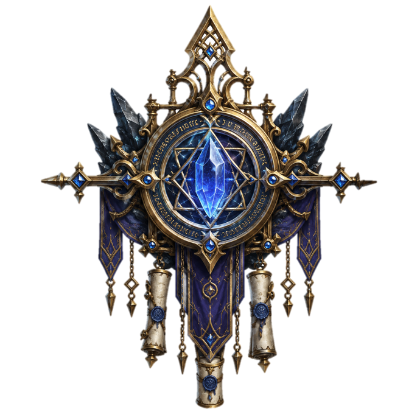
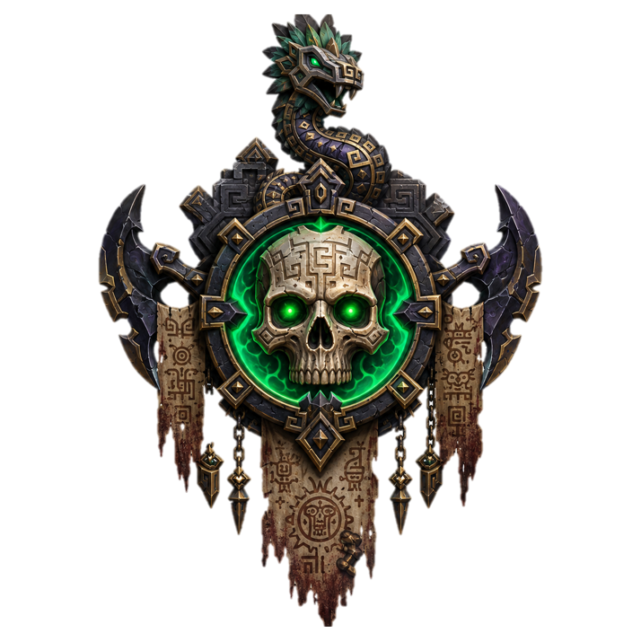
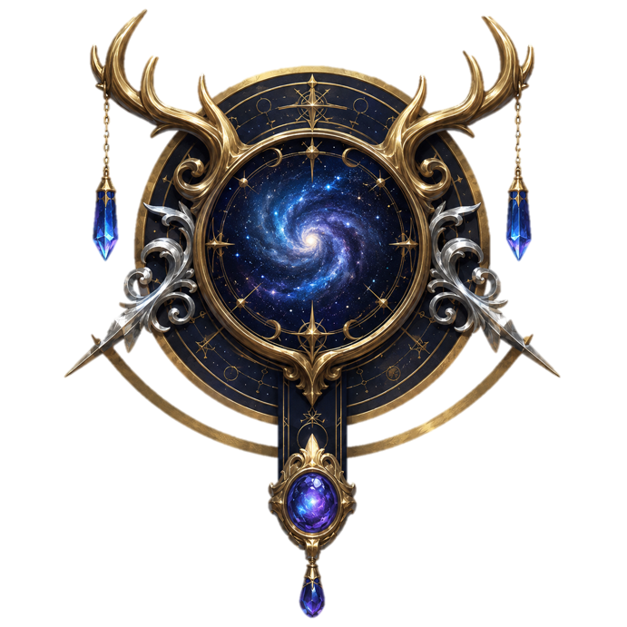
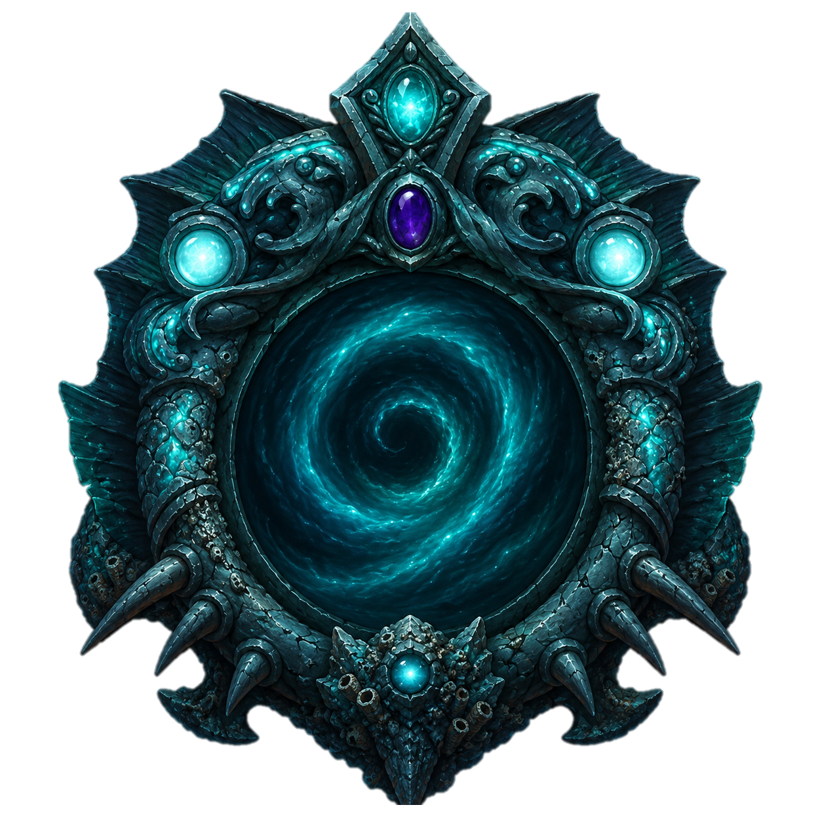
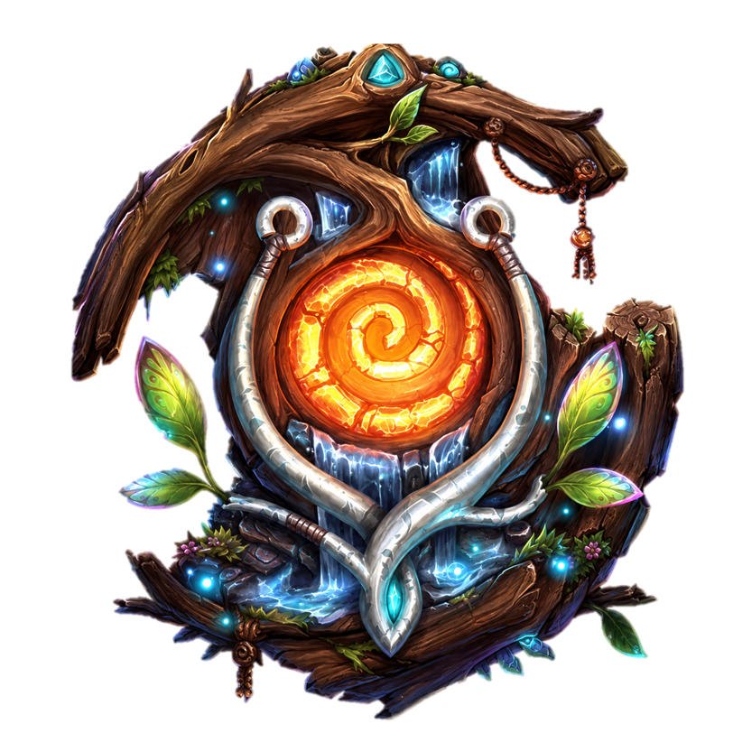
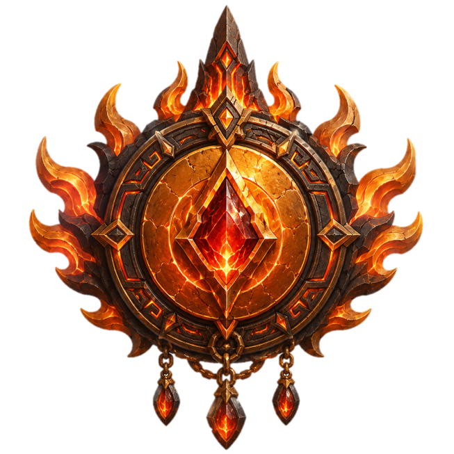

Rivegard
Seigneur Pirate
Zoltran
Pouvoir · Politique · Complot · Intrigues · Venise
Centre diplomatique et politique de Thaldera, Rivegard est gouvernée par un seigneur qu'on ne voit jamais, retranché dans le Palais Bleu. C'est ici que se négocient les alliances, les traités et les guerres qui n'auront jamais lieu.

Havre-Noir
Seigneur Pirate
Sycomore Brise-Pavois
Force · Piraterie · Liberté · Tortuga
Depuis l'Assemblage, un palais construit avec les coques des navires vaincus au fil des siècles, Sycomore Brise-Pavois dirige la Flotte Goudron, la plus grande force de frappe maritime de Thaldera. Ici, la loyauté s'achète, la trahison se punit, et la mer appartient à ceux qui osent la prendre.

Port Doëlan
Seigneur Pirate
Poste Vacant
Commerce · Négoce · Flotte Marchande · Côte Amalfitaine
Autrefois la ville de commerce la plus prospère du Consortium, Port Doëlan n'est plus que l'ombre de ce qu'elle était. Ses quais à moitié effondrés et ses entrepôts pillés témoignent d'une chute rapide. Le vide de pouvoir qui règne ici attire désormais les ambitieux de tout le continent.

Keras Taurok
Consul
Draval Tauroc
Combat · Honneur · Gladiature · Rome
Une cité minotaure gouvernée à la romaine, enrichie par les mines de pierres précieuses des collines et les cultures des Steppes Rouges. Militaire, guerrière, fière. Le statut social s'obtient uniquement par le combat dans l'arène.

Roshen Buru
Gardienne
Anaru Miren-Buru
Forêt rose · Japon · Elfe
Une nation forestière gouvernée par une lignée en communion directe avec Silvanus. Ses plus grands guerriers ne combattent pas seuls : ils entrent en communion profonde avec la forêt et sont liés à un esprit qui les guide au combat. On les appelle les Mirens.

Tzalanar
Grand-Prêtre
Ajaw Tzobal
Sacrifice · Marais · Poison · Aztec · Voodoo
Des cités-temples perdues dans la jungle, à moitié dévorées par les racines et les marais occultes. Un clergé de prêtres-guerriers qui célèbrent Balam, dieu de la chasse et du sacrifice.

There'Duun
Roi Nain
Valdain There'Duun
Montagne · Sous-terrain · Isolationnisme · Technologie
Un royaume nain fermé au monde, protégé derrière une chaîne de montagnes blanches. Le roi Valdain a scellé les portes il y a longtemps. Personne ne sait vraiment pourquoi.

Empire d'Altéra
Impératrice
Eryndel d'Altéra
Classicisme · Répression Religieuse · Culte de l'Arbre
Un empire continental gouverné par une Impératrice immortelle et millénaire et une foi d'État qui vénère Nyrrh, l'Arbre des Étoiles, entité primordiale dont les racines sont censées soutenir le monde. L'Impératrice Eryndel règne depuis Altenheim, où sa cour et le clergé forment un bloc inséparable. Toute déviance religieuse est traitée comme une trahison politique.

Dominion Sol
Roi
Sol Regem
Désert · Foi d'État · Expansion · Secte
Un vaste territoire désertique uni sous la bannière d'un soleil aveuglant. Sol Regem est jeune, mais son règne s'étend vite : le Dominion a récemment entamé une expansion agressive, absorbant villes et territoires voisins. La foi est une obligation sociale. Dans l'ombre du roi, une secte discrète et influente, la Lumière Noire, murmure à son oreille des conseils étranges.

Agran
Suraal
Suuraal
Atlantide · Culte de Kataron
Une cité engloutie au fond de la Mer d'Émeraude, hors d'atteinte de toute lumière naturelle. Ses habitants vivent sous la bienveillance de Kataron, divinité des profondeurs, et illuminent leurs corridors de corail bioluminescent. Le monde de surface les fascine : les Agrans fouillent régulièrement les épaves à la recherche d'objets et de traces de la vie au-dessus. Kataron protège jalousement sa cité - les courants qu'elle génère rendent l'approche presque impossible.

Feywild
Structure bipolaire
Cour Seelie & Cour Unseelie
Fée · Étrange · Magique
Le Feywild est un reflet du monde matériel - plus vif, plus cruel, plus beau. Deux cours rivales se partagent ce plan : la Cour Seelie, qui règne sur les lumières de l'été et accorde sa faveur avec autant de facilité qu'elle la retire, et la Cour Unseelie, dont les intrigues hivernales broient ceux qui s'y aventurent sans protection. Le temps y est élastique, les émotions amplifiées, et la magie coule comme une eau trop vive.

Pyrrah
Incarnat
L'Incarnat de la Flamme
Plan du Feu · Civilisation Ancienne · Hospitalité
Le Plan du Feu est un territoire d'une beauté violente, hostile à toute vie qui n'y est pas née. L'Incarnat de la Flamme gouverne une civilisation ancienne, stable, et étonnamment ouverte aux étrangers. C'est lui qui maintient le dôme de feu qui enveloppe la cité - seul rempart habitable contre un environnement qui consumerait tout le reste.